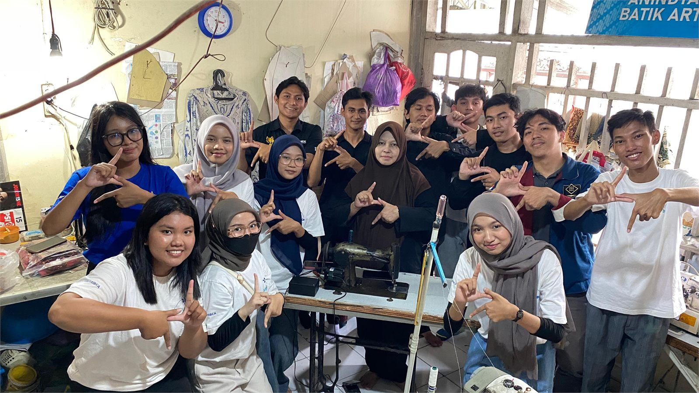

Completed Project
Assistive Sensor System untuk Penjahit Tuli
Proyek kolaboratif EWS yang mengembangkan sistem sensor berbasis mikrokontroler untuk membantu penjahit Tuli dalam aktivitas kerja. Sebagai PIC EWS, saya terlibat dalam koordinasi tim, perancangan wiring, integrasi sensor dengan Arduino Nano, pengujian melalui Arduino IDE, dan dokumentasi implementasi bersama pengguna.
IoTArduino NanoSensor IntegrationSocial ProjectTeam Project
